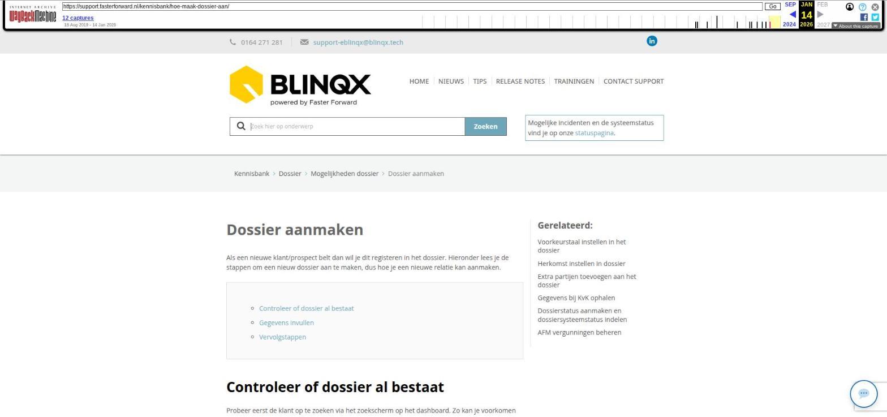

Dossier aanmaken

Tekstinhoud
Dossier aanmaken
Als een nieuwe klant/prospect belt dan wil je dit registeren in het dossier. Hieronder lees je de stappen om een nieuw dossier aan te maken, dus hoe je een nieuwe relatie kan aanmaken.
Controleer of dossier al bestaat
Gegevens invullen
Vervolgstappen
Controleer of dossier al bestaat
Probeer eerst de klant op te zoeken via het zoekscherm op het dashboard. Zo kan je voorkomen dat er dubbele dossiers aangemaakt worden. Wanneer er geen resultaten zijn, krijg je de optie om een nieuw dossier toe te voegen. Klik hiervoor op de knop 'Voeg dossier toe'.
Gegevens invullen
Vervolgens krijg je onderstaande scherm te zien waar je alle klantgegevens in kunt vullen. Links vul je de eerste persoon in, rechts de partner indien aanwezig. Wil je later in het dossier een partner toevoegen dan lees je hier hoe je een persoon toevoegt aan het dossier of de gegevens wijzigt.
Let bij het invullen van de gegevens goed op de volgende zaken:
– Heb je het gewenste type dossier geselecteerd (bijvoorbeeld klantdossier of leveranciersdossier)?
– Heb je het juiste kantoor geselecteerd?
Controleer tijdens het invoeren of het oranje resultaten blokje resultaten aangeeft. Indien er een cijfer in het resultaten blokje staat, bestaat de persoon of organisatie mogelijk al in eBlinqx.
Klik op het resultatenblokje om de overeenkomsten te zien. Indien dit dezelfde persoon of organisatie betreft, klik je hier op de naam en worden alle bekende gegevens aangevuld.
Klik op het opslaanicoon om het dossier aan te maken.
Vervolgstappen
Nadat je het dossier hebt aangemaakt zijn er allerlei mogelijke vervolgstappen. Je kunt hierbij denken aan:
Advies/dienst aanmaken
Hypotheek aanmaken
Schadeverzekering aanmaken
Indien het een leveranciersdossier is, kan het zijn dat je ook een leverancier financieel wilt inrichten
Laatste update: 15 oktober 2025
Tagged: aanmaken
Was deze informatie nuttig?
Ja Nee